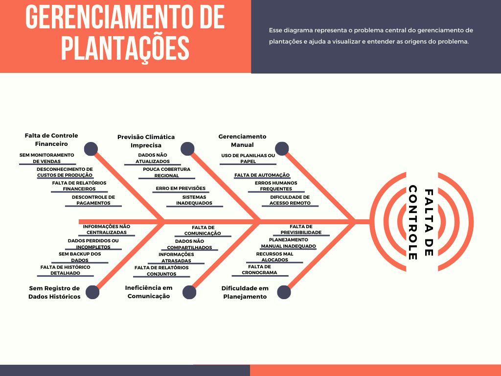
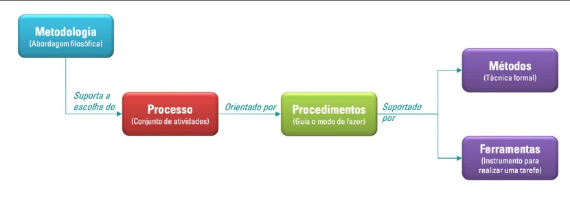

1 Visão Geral do Produto e do Projeto
Versão 1.8
1.1 Problema
Contexto
Muitos agricultores enfrentam dificuldades no gerenciamento eficaz de suas plantações devido à falta de ferramentas adequadas para monitorar e registrar atividades agrícolas. Além disso, a falta de sistemas de previsão meteorológica afeta negativamente a capacidade dos agricultores se prepararem para condições climáticas adversas, como chuvas intensas e secas, que podem prejudicar certas culturas.
Detalhamento do Problema
- Falta de Controle e Registro: Agricultores não possuem um histórico das atividades agrícolas, incluindo plantio, colheita, uso de insumos e outro custos adicionais.
- Previsão Meteorológica Inadequada: Não há um aplicativo eficaz para prever o tempo com antecedência suficiente, o que impede a preparação adequada para condições climáticas adversas como chuvas intensas e secas prolongadas.
- Gestão Financeira Ineficiente: Sem registros detalhados, os agricultores têm dificuldades para calcular os custos e lucros de cada plantação.
Diagrama de Ishikawa
O diagrama abaixo representa o problema central do gerenciamento de plantações e ajuda a visualizar e entender as origens do problema: 
Justificativa
O desenvolvimento dessa aplicação mobile visa solucionar os principais problemas enfrentados pelos agricultores, proporcionando uma ferramenta robusta para o gerenciamento eficaz das plantações, aumentando a produtividade e a lucratividade das operações agrícolas.
Essa solução pode contribuir para a resolução do problema por meio da centralização das informações em um aplicativo. Nesse aplicativo o agricultor pode gerenciar suas plantações(Cadastrar, Editar, Consultar e Exclir), gerenciar as colheitas dessas plantações cadastradas, gerenciar o uso de insumos, vizualizar relatorios das atividades realizadas em cada plantação, vizualizar informações climaticas e gerenciar o estoque de produtos.
Espera-se que a implementação dessa solução não apenas resolva os problemas de desorganização e falta de controle, mas também otimize os processos agrícolas, contribuindo para o aumento da produtividade e rentabilidade dos pequenos e médios produtores rurais.
1.2 Declaração de Posição do Produto
A fim de aprimorar a gestão agrícola e fornecer uma ferramenta eficiente para pequenos e médios produtores rurais, o desenvolvimento do CulturaTech foi cuidadosamente planejado. Este aplicativo visa abordar diversas necessidades identificadas no setor agrícola, oferecendo funcionalidades inovadoras e acessíveis para os agricultores. A seguir, apresentamos a declaração de posicionamento do produto, detalhando seu propósito, escopo e diferenciais.
Tabela 1: Posição do Produto
| Item | Descrição | Comentário |
|---|---|---|
| Para | Agricultores e pequenos produtores rurais. | Foco em um público que carece de ferramentas tecnológicas acessíveis para gerenciar suas plantações de forma eficiente. |
| Necessidade | Facilitar o gerenciamento completo das plantações, desde o cadastro do plantio até a colheita, com previsões climáticas precisas. | A necessidade identificada reflete a falta de controle organizado e de informações meteorológicas confiáveis no dia a dia dos pequenos e médios produtores. |
| O (nome do produto) | É um aplicativo mobile para controle de plantações, gestão financeira e previsão meteorológica com o nome CulturaTech. | A proposta do produto é oferecer uma solução centralizada e acessível para a gestão agrícola, usando tecnologia mobile. |
| Que | Fornece aos agricultores controle sobre suas plantações, incluindo histórico de plantio, colheita, atividades agrícolas como adubação, fertilização, etc. | As funcionalidades abrangem as etapas do processo agrícola, facilitando a tomada de decisão baseada nas informações obtidas durante esse processo. |
| Ao contrário | Sistemas manuais ou inexistentes, que não fornecem dados centralizados e precisos. | Diferencia-se das práticas tradicionais (como anotações em papel), que são ineficazes para fornecer uma visão integrada da plantação. |
| Nosso produto | Oferece uma solução integrada, com previsões meteorológicas e relatórios financeiros sobre cada plantação cadastrada, diferenciando-se por atender às necessidades específicas de pequenos e médios produtores. | A integração das funcionalidades, especialmente as notificações antecipadas de chuvas, é um diferencial competitivo importante. |
1.3 Objetivos do Produto
- Melhorar a Gestão das Plantações:
- Cadastro e Monitoramento: Permitir que os agricultores registrem e monitorem detalhadamente cada plantação, incluindo a quantidade de insumos utilizados, as colheitas que foram realizadas e os custos adicionais dessa plantação.
- Histórico de Atividades: Manter um histórico completo e acessível das atividades realizadas nas plantações, visando uma análise futura e melhor tomada de decisões.
- Aumentar a Precisão das Previsões Meteorológicas:
- Notificações Antecipadas: Implementar um sistema de notificações meteorológicas que avise os agricultores, com antecedência mínima de 12 horas, sobre a previsão de chuva ou outras condições climáticas adversas.
- Preparação para Clima Adverso: Ajudar os agricultores a se prepararem adequadamente para condições climáticas adversas, diminuindo perdas e danos às plantações.
- Otimizar a Gestão Financeira:
- Relatórios Financeiros Detalhados: Fornecer ferramentas para gerar relatórios detalhados sobre custos, receitas e lucros das plantações.
- Controle de Insumos: Monitorar e registrar o uso de insumos agrícolas, como fertilizantes e pesticidas, para otimizar custos e melhorar a eficiência.
1.4 Tecnologias a Serem Utilizadas
Linguagens, Frameworks e Bibliotecas
- React Native: Linguagem utilizada para o frontend de aplicativos mobile;
- Expo: Plataforma para desenvolvimento de aplicativos;
- NodeJS: Framework de JavaScript para o backend da aplicação;
- Axios: Biblioteca de JS para realizar requisições HTTTP;
- Express: Framework do NodeJS utilizado para construir APIs de comunicação;
- Sequelize: ORM para NodeJS que simplifica a interação com o banco de dados.
Design
- Figma;
- Canva;
- React Native Paper e React Native Elements (Biblioteca de UI).
Banco de Dados
- SQLite.
APIs
- HGBrasil: Para previsão do tempo.
Ferramentas de Desenvolvimento
- Visual Studio Code;
- Git;
- GitHub;
- Expo CLI;
- Android Studio;
- Insomnia: Para realização de teste;
- SQLiteStudio: Para a vizualização do banco de dados.
Metodologia
- Ágil.
- Processo:
- SCRUM e XP.
2 Visão Geral do Projeto
2.1 Ciclo de Vida do Projeto de Desenvolvimento de Software

Metodologia
Usando um ciclo de vida ágil como metodologia para responder bem às frequentes mudanças, realizar entregas rápidas e obter feedbacks constantes do cliente. Essa abordagem permite um desenvolvimento centrado no cliente, garantindo a qualidade do produto.
Processo
- Scrum: Utilizando Scrum para estruturar e gerenciar o projeto em constante comunicação com o cliente, com entregas frequentes.
- XP (Extreme Programming): Usa feedback rápido e comunicação com alta taxa de disponibilidade para maximizar a entrega de valor, por meio de um cliente no local, uma abordagem de planejamento específica e testes constantes.
Procedimentos
Planejamento
- Dividir o Product Backlog em tarefas menores e organizá-las por prioridade.
- Usar técnicas como Story Mapping para identificar prioridades.
Desenvolvimento
- Práticas do XP: Programação em pares, com dois desenvolvedores trabalhando juntos no mesmo código.
- Práticas do Scrum: Integração contínua, verificando constantemente o código para evitar problemas quando adicionada uma nova funcionalidade.
Entrega e Feedback
- Liberar releases durante o processo de desenvolvimento, versões incrementais.
- Obter feedback do cliente para possíveis ajustes.
Métodos
- Acompanhamento de Projeto: Direto com o Project Owner, dando feedbacks sobre a aplicação aos desenvolvedores, evitando erros de interpretação.
- Verificação e Validação: Conjunto de atividades conduzidas ao longo do ciclo de vida de um projeto de software para garantir a qualidade do produto entregue ao final do desenvolvimento.
- Processos Formais de Entrega: Validação rápida e ágil.
Ferramentas
- React Native: Front-end.
- Node.js: Back-end.
- Figma: Protótipo.
- Canva: Design.
- GitHub: Controle de versão.
2.2 Organização do Projeto
Tabela 2: Organização do Projeto
| Papel | Atribuições | Responsável | Participantes |
|---|---|---|---|
| Dono do produto | Atualizar o escopo do produto, organizar o escopo das sprints, validar as entregas | Gabriel Berto | Gabriel Berto, Will Sales |
| Analista de qualidade | Garantir a qualidade do produto, garantir o cumprimento do conceito de pronto, realizar inspeções de código | Equipe do Projeto | Equipe do Projeto |
| Desenvolvedor | Codificar o produto, codificar testes unitários, realizar refatoração | Equipe do Projeto | Equipe do Projeto |
| Scrum Master | Garantir a aplicação das práticas ágeis, remover impedimentos e facilitar a colaboração | Joao Pedro Ferreira Moraes | Joao Pedro Ferreira Moraes |
| Cliente | Fornecer os requisitos iniciais, priorizar o Product Backlog, garantir que o produto atenda ao valor esperado | Will Sales | Will Sales |
2.3 Planejamento das Fases e/ou Iterações do Projeto
Tabela 3: Planejamento do Projeto
| Sprint | Desenvolvimento (Entrega) | Data Início | Data Fim | Entregável(eis) | Responsáveis | % conclusão |
|---|---|---|---|---|---|---|
| 1 | Definição do Produto | 22/11/2024 | 29/11/2024 | Equipe do Projeto | 100% | |
| 2 | Desenvolvimento de Documento de Visão | 29/11/2024 | 06/12/2024 | Documento de Visão | Equipe do Projeto | 100% |
| 3 | Desenvolvimento do Documento de arquitetura | 11/12/2024 | 18/12/2024 | Documento de arquitetura | Equipe do Projeto | 100% |
| 4 | Desenvolvimento do design das telas no Figma | 20/12/2024 | 27/12/2024 | Equipe do Projeto | 100% | |
| 5 | Feriado | 27/12/2024 | 03/01/2025 | Feriado | Equipe do Projeto | |
| 6 | Desenvolvimento do Front-End do aplicativo | 03/01/2025 | 10/01/2025 | Equipe do Projeto | 100% | |
| 7 | Desenvolvimento do Modulos de plantação e a Previsão do tempo | 10/01/2025 | 17/01/2025 | Equipe do Projeto | 100% | |
| 8 | Desenvolvimento dos Modulos de colheitas, Estoque, Custos | 17/01/2025 | 24/01/2025 | Equipe do Projeto | 100% | |
| 9 | Desenvolvimento do Modulo de Insumos, Relacionamentos do banco de dados, integração geral | 24/01/2025 | 31/01/2025 | Equipe do Projeto | 80% | |
| 10 | Desenvolvimento do Backup de Dados, Notificacoes, e detalhes finais | 31/01/2025 | 07/02/2025 | Equipe do Projeto | ||
| 11 | Testes do Software e correção de bugs | 07/02/2025 | 10/02/2025 | Equipe do Projeto |
2.4 Matriz de Comunicação
- Monitoramento do progresso do projeto:
- A duração de cada Sprint é de uma semana.
- A comunicação será realizada de forma periódica para garantir o acompanhamento contínuo das atividades.
- Transparência no progresso do projeto.
Tabela 4: Matriz de Comunicação
| Descrição | Área/Envolvidos | Periodicidade | Produtos Gerados |
|---|---|---|---|
| Acompanhamento das Atividades em Andamento | Equipe do Projeto | Semanal | Ata de reunião / Gravação, Relatório de situação do projeto |
| Acompanhamento dos Riscos, Compromissos, Ações Pendentes, Indicadores | Equipe do Projeto | Quinzenal | Relatório de situação do projeto |
| Comunicar situação do projeto | Equipe / Professor / Monitor | Semanal | Ata de reunião / Gravação, Relatório de situação do projeto |
| Feedback do Cliente | Will, Gabriel | Ao final de cada sprint (Semanal) | Relatório de feedback |
2.5 Gerenciamento de Riscos
- Identificação dos riscos
- Relatório de feedback
-
Detecção de riscos possíveis e detectáveis em cada fase do projeto, com base em análise de contexto e histórico.
-
Análise e Avaliação
-
Grau de exposição de cada risco identificado. Riscos com alta probabilidade e impacto exigem ações de mitigação imediatas.
-
Revisão Periódica
-
A lista de riscos será revisada regularmente para garantir que os riscos foram identificados e que novos riscos não passaram despercebidos.
-
Registro e Monitoramento
- Todos os riscos serão registrados no relatório de situação do projeto, com atualização constante conforme necessário.
Tabela 5: Gerenciamento de Risco
| Risco | Grau de exposição | Mitigação | Plano de Contingência |
|---|---|---|---|
| Atraso nas entregas | Alto | Alinhar cronograma com equipe, ajustes semanais | Reforçar equipes, ajustes de prioridade nas tarefas |
| Falha na comunicação | Médio | Reuniões semanais para alinhamento | Uso de ferramentas de comunicação adicionais |
| Problemas técnicos | Alto | Testes contínuos, suporte técnico dedicado | Soluções alternativas para problemas críticos |
| Mudança nos requisitos | Médio | Validação constante com o cliente | Ajuste do escopo, renegociação de prazos |
| Falta de recursos humanos | Baixo | Planejamento de pessoal, capacitação contínua | Redistribuição de tarefas |
2.6 Critérios de Replanejamento
O replanejamento em um projeto de software ocorre quando há a necessidade de ajustar o planejamento original devido a mudanças, imprevistos ou a detecção de que o projeto está fora do curso. O replanejamento visa realinhar os objetivos, prazos e recursos de modo a garantir que o projeto continue progredindo de forma eficiente e atenda aos requisitos estabelecidos.
Os critérios de replanejamento geralmente são baseados em indicadores que sinalizam a necessidade de ajustes
- Atraso no cronograma
- Número excessivo de atrasos nas entregas que torna necessário a alteração no cronograma
-
Mudanças de prioridades podem causar atrasos sendo necessária a alteração no cronograma
-
Problemas de qualidade
- Software apresenta quantidade de defeitos grande será necessário replanejar a alocação de tempo para testes, correções e validações
-
Durante a execução do projeto forem observadas falhas em atender aos padrões de qualidade
-
Mudança nos requisitos
- Novos requisitos ou mudanças nos que já existem podem exigir ajustes no projeto
-
Se os requisitos fornecidos inicialmente estavam incompletos ou foram mal interpretados, pode ser necessário replanejar as entregas
-
Falta de recurso humano
- Caso a equipe de desenvolvimento ou outros recursos necessários não estejam disponíveis ou não possuam a competência necessária, será preciso ajustar o plano
3 Processo de Desenvolvimento de Software
3.1 Metodologia
Adotamos um ciclo de vida ágil baseado nas metodologias Scrum e XP, priorizando respostas rápidas às mudanças e entregas frequentes para obter feedbacks constantes do cliente. Essa abordagem garante um desenvolvimento centrado no cliente e assegura a qualidade do produto ao longo do processo.
3.2 Principais etapas do processo:
Planejamento:
- Divisão do Product Backlog, criado e priorizado com o cliente.
- Uso de técnicas como Story mapping para definir prioridades e funcionalidades.
- As tarefas priorizadas são distribuídas entre as Sprints (ciclo de trabalho de curta duração).
Desenvolvimento:
- Práticas de Scrum:
- Desenvolvimento em Sprints (ciclos curtos de 1-2 semanas).
- Revisões periódicas do progresso do Sprint.
- Práticas de XP:
- Programação em dupla para maior qualidade e compartilhamento de conhecimento.
- Testes constantes e integração contínua para minimizar problemas.
Entrega e Feedback:
- Liberação de releases intermediárias para validação contínua do cliente.
- Obtenção de feedback imediato para ajustes e melhorias.
Verificação e Validação:
- Atividades contínuas ao longo do ciclo de vida para garantir a qualidade do produto.
- Processos ágeis de validação, realizados em conjunto com o cliente.
Papeis e Responsabilidades:
- Product Owner (PO): Define as prioridades, valida as entregas e oferece feedback constante à equipe.
- Scrum Master: Facilita os ritos do Scrum e garante que a equipe siga o processo.
- Equipe de Desenvolvimento: Implementa as funcionalidades, realiza testes e entrega os incrementos.
- Cliente: Participa ativamente com feedbacks e valida as entregas.
Ferramentas Utilizadas:
- React Native: Desenvolvimento do front-end.
- Node.js: Desenvolvimento do back-end.
- Figma: Criação de protótipos.
- Canva: Design de elementos gráficos.
- Github: Controle de versão e colaboração de códigos.
4 Declaração de Escopo do Projeto
4.1 Backlog do Produto
Os itens de backlog do produto foram obtidos a partir de entrevistas com o P.O., e em seguida, refinados para apresentar as funcionalidades desejadas no produto final.
Tabela 6: Backlog do Produto Inicial
| ID | História | Prioridade |
|---|---|---|
| 01 | Gerenciar Plantação | Muito Alta |
| 02 | Gerenciar Colheita | Muito Alta |
| 03 | Gerenciar Estoque | Alta |
| 04 | Gerenciar Insumos | Muito Alta |
| 05 | Gerenciar Custos Adicionais | Alta |
| 06 | Gerenciar Custos Gerais | Alta |
| 07 | Gerar Relatorios em PDF | Muito Alta |
| 08 | Informações do Clima | Muito Alta |
| 09 | Widget do Produto | Baixa |
| 10 | Backup de dados | Alta |
| 11 | Notificações sobre o clima | Alta |
| 12 | Notificações sobre o estoque | Média |
Tabela 7: Backlog do Produto Refinado
| ID | História | ID | Épico | Prioridade |
|---|---|---|---|---|
| H01 | Gerenciar Plantação | E01 | Cadastrar Plantação | Muito Alta |
| E02 | Consultar Plantação | Muito Alta | ||
| E03 | Editar Plantação | Muito Alta | ||
| E04 | Fechar Plantação | Muito Alta | ||
| E05 | Excluir Plantação | Muito Alta | ||
| H02 | Gerenciar Colheita | E06 | Cadastrar Colheita | Muito Alta |
| E07 | Consultar Colheita | Muito Alta | ||
| E08 | Editar Colheita | Muito Alta | ||
| E09 | Fechar Colheita | Muito Alta | ||
| E10 | Excluir Colheita | Muito Alta | ||
| H03 | Gerenciar Estoque | E11 | Cadastrar Item | Média |
| E12 | Consultar Estoque | Média | ||
| E13 | Editar Item | Média | ||
| E14 | Excluir Item | Média | ||
| E15 | Alerta de Item | Baixa | ||
| H04 | Gerenciar Insumo | E16 | Cadastrar Insumo | Muito Alta |
| E17 | Listar Insumos | Muito Alta | ||
| E18 | Editar Insumo | Muito Alta | ||
| E19 | Excluir Insumo | Muito Alta | ||
| H05 | Gerenciar Custos | E20 | Cadastrar Custos Adicionais | Muito Alta |
| E21 | Listar Custos Adicionais | Muito Alta | ||
| E22 | Editar Custos Adicionais | Muito Alta | ||
| E23 | Excluir Custos Adicionais | Muito Alta | ||
| H06 | Gerenciar Custos Gerais | E24 | Cadastrar Custo Geral | Muito Alta |
| E25 | Consultar Custo Geral | Muito Alta | ||
| E26 | Editar Custo Geral | Muito Alta | ||
| E27 | Excluir Custo Geral | Muito Alta | ||
| H07 | Informações do Clima | E28 | Ver Previsão do Tempo | Muito Alta |
| E29 | Enviar Alertas do Clima | Muito Alta | ||
| E30 | Personalizar Notificação | Baixa | ||
| H08 | Widget do Produto | E31 | Criar Widget | Baixa |
| H09 | Backup de Dados | E32 | Fazer Backup | Alta |
| H10 | Exportar Documento | E33 | Exportar Documentos para PDF | Muito Alta |
4.2 Perfis
Tabela 8: Perfis de Acesso
| # | Nome do perfil | Características do perfil | Permissões de acesso |
|---|---|---|---|
| 01 | Usuário | Responsável por cadastrar colheitas e plantações no sistema, gerenciar estoque e consultar relatórios e previsão do tempo. | O usuário possui acesso a todas as funcionalidades do sistema. |
4.3 Cenários
Tabela 9: Cenários Funcionais
Sistema: xxx – Cenários funcionais
| Numeração do cenário | Nome do cenário | Sprints |
|---|---|---|
| E01 | Cadastrar Plantação | 07 |
| E02 | Consultar Plantação | |
| E03 | Editar Plantação | |
| E04 | Fechar Plantação | |
| E05 | Excluir Plantação | |
| E06 | Cadastrar Colheita | 08 |
| E07 | Consultar Colheita | |
| E08 | Editar Colheita | |
| E09 | Excluir Colheita | |
| E10 | Cadastrar Item | 08 |
| E11 | Consultar estoque | |
| E12 | Editar Item | |
| E13 | Excluir Item | |
| E14 | Alerta de Item | |
| E15 | Cadastrar Insumo | |
| E16 | Listar Insumos | |
| E17 | Editar Insumo | |
| E18 | Excluir Insumo | |
| E27 | Cadastrar Custos | 08 |
| E28 | Listar Custos | |
| E29 | Editar Custos | |
| E30 | Excluir Custos | |
| E31 | Cadastrar Custo | 10 |
| E32 | Consultar Custo | |
| E33 | Editar Custo | |
| E34 | Excluir Custo | |
| E35 | Ver Previsão do Tempo | 07 |
| E36 | Enviar Alertas do Clima | |
| E37 | Personalizar Notificação | |
| E38 | Criar Widget | 10 |
| E39 | Fazer Backup | 10 |
| E40 | Exportar Documentos para PDF | 08 |
| -------------------------- | --------------------------------- | ------------- |
4.4 Histórias de Usuário
Tabela 10: Histórias de Usuário
| US | Descrição | Cenário |
|---|---|---|
| US01 | Como um agricultor eu quero poder registrar informações sobre minhas plantações para ter um melhor gerenciamento sobre ela. | Cadastrar Plantação |
| US01 - Aceite | Apresentar formulário com informações como: | |
| - Nome da Plantação | ||
| - Tipo de Cultura | ||
| - Área Plantada | ||
| - Data do Plantio | ||
| - Quantidade | ||
| - Custo Primário | ||
| US02 | Como um agricultor, quero poder consultar minhas plantações para visualizar suas informações. | Consultar Plantação |
| US02 - Aceite | Apresentar uma lista das plantações cadastradas com as informações: | |
| - Nome da Plantação | ||
| - Tipo de Cultura | ||
| - Área Plantada | ||
| - Data do Plantio | ||
| - Quantidade | ||
| - Custo Primário | ||
| US03 | Como um agricultor, quero poder editar informações sobre minhas plantações para ter um controle mais eficiente das informações. | Editar Plantação |
| US03 - Aceite | Apresentar as informações da plantação selecionada e permitir edição nas informações: | |
| - Nome da Plantação | ||
| - Tipo de Cultura | ||
| - Área Plantada | ||
| - Data do Plantio | ||
| - Quantidade | ||
| - Custo Primário | ||
| US04 | Como um agricultor eu quero poder fechar minhas plantações para tê-las como concluídas. | Fechar Plantação |
| US04 - Aceite | Apresentar uma opção que sete a plantação como fechada e não permitir mais edições | |
| US05 | Como um agricultor eu quero poder excluir minhas plantações para manter apenas os registros importantes. | Excluir Plantação |
| US05 - Aceite | Permitir a exclusão de plantação. | |
| US06 | Como um agricultor, quero poder registrar informações sobre minhas colheitas para ter um melhor gerenciamento sobre ela. | Cadastrar Colheita |
| US06 - Aceite | Apresentar formulário com informações como: | |
| - Quantidade Colhida | ||
| - Qualidade | ||
| - Destino | ||
| - Data da Colheita | ||
| - Custo da Colheita | ||
| - Valor de Venda | ||
| US07 | Como um agricultor, quero poder consultar minhas colheitas para visualizar suas informações. | Consultar Colheita |
| US07 - Aceite | Apresentar uma lista das colheitas cadastradas com as informações: | |
| - Quantidade Colhida | ||
| - Qualidade | ||
| - Destino | ||
| - Data da Colheita | ||
| - Custo da Colheita | ||
| - Valor de Venda | ||
| US08 | Como um agricultor, quero poder editar informações sobre minhas colheitas para ter um controle mais eficiente das informações. | Editar Colheita |
| US08 - Aceite | Apresentar as informações da colheita selecionada e permitir edição nas informações: | |
| - Quantidade Colhida | ||
| - Qualidade | ||
| - Destino | ||
| - Data da Colheita | ||
| - Custo da Colheita | ||
| - Valor de Venda | ||
| US09 | Como um agricultor eu quero poder excluir minhas colheitas para manter apenas os registros importantes. | Excluir Colheita |
| US09 - Aceite | Permitir a exclusão de colheita. | |
| US10 | Como um agricultor, quero registrar meu estoque de itens para gerenciar meus produtos agrícolas. | Cadastrar Item |
| US10 - Aceite | Apresentar formulário com informações como: | |
| - Nome do item | ||
| - Quantidade em estoque | ||
| - Validade do produto | ||
| - Custo/g | ||
| - Custo/L | ||
| - Data da última compra | ||
| US11 | Como um agricultor, quero poder consultar meu estoque de itens para não ser pego com possíveis imprevistos de falta de material. | Consultar estoque |
| US11 - Aceite | Apresentar uma lista dos itens cadastrados no estoque com as informações: | |
| - Nome do item | ||
| - Quantidade em estoque | ||
| - Validade do produto | ||
| - Custo/g | ||
| - Custo/L | ||
| - Data da última compra | ||
| US12 | Como agricultor, quero poder editar informações do meu estoque de itens para manter as informações atualizadas. | Editar Item |
| US12 - Aceite | Apresentar as informações do item selecionado e permitir edição nas informações: | |
| - Nome do item | ||
| - Quantidade em estoque | ||
| - Validade do produto | ||
| - Custo/g | ||
| - Custo/L | ||
| - Data da última compra | ||
| US13 | Como um agricultor eu quero poder excluir meus itens para manter apenas os registros importantes. | Excluir Item |
| US13 - Aceite | Permitir a exclusão de item. | |
| US14 | Como um agricultor eu quero ser avisado caso um item do meu estoque esteja abaixo do esperado | Alerta de Item |
| US14 - Aceite | Enviar um alerta para o usuário quando um item do estoque ficar abaixo do pré-estipulado por ele | |
| US15 | Como um agricultor, quero poder registrar o uso de meus insumos do depósito para gerenciar os gastos dos meus produtos. | Cadastrar Insumo |
| US15 - Aceite | O usuário deverá selecionar a plantação ou provável colheita que será utilizada o insumo e preencher os campos do formulário: | |
| - Selecionar o insumo pré-cadastrado no banco (caso tenha) | ||
| - Nome do insumo (caso não cadastrado) | ||
| - Quantidade (g) | ||
| - Quantidade (L) | ||
| - Valor (caso não cadastrado) | ||
| US16 | Como agricultor eu quero poder consultar os insumos utilizados nas plantações e colheitas para poder gerenciar os itens utilizados. | Listar Insumos |
| US16 - Aceite | Listar os insumos cadastrados na colheita. | |
| US17 | Como agricultor eu quero poder editar os insumos cadastrados na colheita para manter as informações atualizadas. | Editar Insumo |
| US17 - Aceite | Permitir edição de todos os campos do insumo cadastrado na colheita. | |
| US18 | Como um agricultor eu quero poder excluir meus insumos para manter apenas os registros importantes. | Excluir Insumo |
| US18 - Aceite | Permitir a exclusão de insumo cadastrado em uma colheita. | |
| US19 | Como um agricultor eu quero poder cadastrar meus funcionários para guardar informações relevantes | Cadastrar Funcionário |
| US19 - Aceite | Apresentar um formulário com campos: | |
| - Nome | ||
| - Cargo | ||
| - Salário | ||
| - Data de contratação | ||
| US20 | Como um agricultor eu quero poder listar as informações de funcionários para consultar dados importantes. | Listar Funcionários |
| US20 - Aceite | Apresentar uma lista dos funcionários cadastrados. | |
| US21 | Como um agricultor eu quero poder editar informações de funcionários para manter os dados atualizados | Editar Funcionário |
| US21 - Aceite | Listar as informações do funcionário selecionado e permitir edição nos campos: | |
| - Cargo | ||
| - Salário | ||
| - Data da contratação | ||
| US22 | Como agricultor eu quero poder excluir um funcionário cadastrado para manter os dados de funcionário atualizado. | Excluir Funcionário |
| US22 - Aceite | Permitir excluir um funcionário cadastrado. | |
| US23 | Como um agricultor eu quero poder cadastrar máquinas para gerenciar informações e gastos | Cadastrar Máquinas |
| US23 - Aceite | Apresentar um formulário com: | |
| - Nome | ||
| - Tipo | ||
| - Fabricante | ||
| - Ano | ||
| - Gasto mensal | ||
| US24 | Como agricultor eu quero listar as máquinas cadastradas para consultar informações. | Consultar Máquina |
| US24 - Aceite | Apresentar uma lista das máquinas cadastradas. | |
| US25 | Como agricultor eu quero poder editar informações das máquinas cadastradas para manter os dados atualizados. | Editar Máquina |
| US25 - Aceite | Apresentar os dados da máquina selecionada e permitir edição. | |
| US26 | Como agricultor eu quero poder excluir uma máquina cadastrada para manter as informações atualizadas. | Excluir Máquina |
| US26 - Aceite | Permitir a exclusão de uma máquina cadastrada. | |
| US27 | Como um agricultor, quero poder registrar uma atividade agrícola para gerenciar a manutenção das plantações. | Cadastrar Atividade Agrícola |
| US27 - Aceite | Apresentar formulário com informações como: | |
| - Nome da atividade | ||
| - Descrição | ||
| - Data da Atividade | ||
| US28 | Como um agricultor, quero poder consultar minhas atividades agrícolas para ter um melhor controle sobre elas. | Listar Atividades Agrícolas |
| US28 - Aceite | Apresentar uma tela com a lista das atividades agrícolas com as informações: | |
| - Nome da atividade | ||
| - Descrição | ||
| - Data | ||
| - Funcionário | ||
| - Máquina | ||
| - Insumo | ||
| Permitindo o Agricultor excluir esta atividade se for de seu interesse. | ||
| US29 | Como agricultor eu quero poder editar informações das atividades agrícolas cadastradas para manter os dados atualizados. | Editar Atividade Agrícola |
| US29 - Aceite | Permitir edição dos campos: | |
| - Nome da atividade | ||
| - Descrição | ||
| - Data | ||
| - Funcionário | ||
| - Máquina | ||
| - Insumo | ||
| US30 | Como agricultor eu quero poder excluir uma atividade agrícola cadastrada para manter as informações atualizadas. | Excluir Atividade Agrícola |
| US30 - Aceite | Permitir a exclusão de uma atividade agrícola cadastrada. | |
| US31 | Como um agricultor, quero registrar meus custos e receitas específicos para gerenciar meus gastos na plantação. | Cadastrar Custo |
| US31 - Aceite | Será preciso selecionar uma plantação já cadastrada e apresentar formulário com informações como: | |
| - Nome do custo | ||
| - Tipo (tipo de custo) | ||
| - Descrição | ||
| - Valor | ||
| - Data | ||
| US32 | Como um agricultor, quero poder consultar meus custos para ter um melhor controle financeiro. | Consultar Custo |
| US32 - Aceite | Apresentar uma tela com a lista dos gastos com uma plantação com as informações: | |
| - Nome do custo | ||
| - Tipo (tipo de custo) | ||
| - Descrição | ||
| - Valor | ||
| - Data | ||
| US33 | Como agricultor eu quero poder editar um custo cadastrado em plantação para manter os dados atualizados. | Editar Custo |
| US33 - Aceite | Permitir edição nos campos | |
| - Nome do custo | ||
| - Tipo (tipo de custo) | ||
| - Descrição | ||
| - Valor | ||
| - Data | ||
| US34 | Como agricultor eu quero poder excluir um custo cadastrado para manter as informações atualizadas. | Excluir Custo |
| US34 - Aceite | Permitir a exclusão de um custo cadastrado. | |
| US35 | Como um agricultor, quero ter acesso a informações do clima e previsão do tempo para me preparar com antecedência para possíveis ameaças às minhas plantações. | Ver Previsão do Tempo |
| US35 - Aceite | Apresentar uma tela com informações do clima com previsões do tempo. | |
| US36 | Como um agricultor, quero receber alertas de mudanças climáticas para me preparar o quanto antes para possíveis ameaças às plantações. | Enviar Alertas do Clima |
| US36 - Aceite | Enviar notificações de alerta com mudanças climáticas com no mínimo 24h de antecedência e condições adversas. | |
| US37 | Como usuário eu quero poder personalizar as notificações para receber alertas em horários específicos. | Personalizar Notificação |
| US37 - Aceite | Permitir a escolha do horário das notificações do dia (das 6 às 21, por exemplo). | |
| US38 | Como um usuário, quero poder visualizar algumas informações como previsão do tempo e dados do estoque sem precisar abrir o aplicativo para poupar tempo. | Criar Widget |
| US38 - Aceite | Criar um Widget para o usuário ver as informações do aplicativo na tela inicial do celular. | |
| US39 | Como um usuário, quero poder fazer backup dos relatórios e dados para ter segurança e oportunidade de recuperar informações. | Fazer Backup |
| US39 - Aceite | Permitir o usuário fazer backup dos dados manualmente ou automaticamente. | |
| US40 | Como agricultor eu quero poder exportar os relatórios gerados pelo aplicativo em formato PDF para ter fácil acesso e compartilhamento. | Exportar Documentos para PDF |
| US40 - Aceite | Permitir o usuário exportar os relatórios completos da plantação com todas as informações relacionadas a ela (custos, insumos, funcionários, máquinas, atividades...). |
4.5 Tabela de Backlog do Produto
Tabela 11: Backlog do Produto
Sistema: xxxx – Backlog do produto
| Numeração | Sprint | Nome do requisito | Tipo de requisito | Priorização do requisito | Descrição suscinta do requisito | User stories (U.S.) associadas |
|---|---|---|---|---|---|---|
| 01 | 7 | Cadastrar Plantação | Funcional | Must | O aplicativo deverá permitir o cadastro de plantações com informações como nome da plantação, tipo de cultura, área plantada, data de plantio e quantidade. | US01 |
| 02 | 7 | Consultar Plantações | Funcional | Must | O aplicativo deverá permitir a visualização das plantações cadastradas. | US02 |
| 03 | 7 | Editar Plantação | Funcional | Must | O aplicativo deverá permitir a edição de campos da plantação. | US03 |
| 04 | 7 | Fechar Plantação | Funcional | Must | O aplicativo deverá permitir o usuário fechar (concluir) uma plantação. | US04 |
| 05 | 7 | Excluir Plantação | Funcional | Must | O aplicativo deverá permitir o usuário excluir uma plantação cadastrada. | US05 |
| 06 | 8 | Cadastrar Colheita | Funcional | Must | O aplicativo deverá permitir cadastro de colheitas. | US06 |
| 07 | 8 | Consultar Colheitas | Funcional | Must | O aplicativo deverá permitir a visualização das colheitas cadastradas. | US07 |
| 08 | 8 | Editar Colheita | Funcional | Must | O aplicativo deverá permitir a edição de campos da colheita. | US08 |
| 09 | 8 | Excluir Colheita | Funcional | Must | O aplicativo deverá permitir a exclusão de uma colheita cadastrada. | US09 |
| 10 | 9 | Cadastrar Item no Estoque | Funcional | Must | O aplicativo deverá permitir o cadastro de itens no estoque. | US10 |
| 11 | 9 | Consultar Item no Estoque | Funcional | Must | O aplicativo deve permitir o usuário consultar os itens cadastrados no estoque. | US11 |
| 12 | 9 | Editar Item no Estoque | Funcional | Must | O aplicativo deve permitir o usuário editar itens no estoque. | US12 |
| 13 | 9 | Excluir Item no Estoque | Funcional | Must | O aplicativo deve permitir a exclusão de um item cadastrado no estoque. | US13 |
| 14 | 9 | Alerta de Item no Estoque | Funcional | Should | O aplicativo deverá alertar sobre a necessidade de reabastecimento de insumos com base nos níveis mínimos definidos pelo usuário. | US14 |
| 15 | 8 | Cadastrar Insumo | Funcional | Must | O aplicativo deverá permitir o cadastro de insumos agrícolas e seu uso nas plantações e colheitas. | US15 |
| 16 | 8 | Listar Insumos | Funcional | Must | O aplicativo deverá permitir a listagem de insumos cadastrados em plantações e colheitas. | US16 |
| 17 | 8 | Editar Insumo | Funcional | Must | O aplicativo deverá permitir a edição de informações nos insumos cadastrados. | US17 |
| 18 | 8 | Excluir Insumo | Funcional | Must | O aplicativo deverá permitir a exclusão de um insumo cadastrado. | US18 |
| 19 | 9 | Cadastrar Funcionário | Funcional | Could | O aplicativo deverá permitir o cadastro de funcionários com informações como nome, cargo, salário, data de contratação. | US19 |
| 20 | 9 | Consultar Funcionário | Funcional | Could | O aplicativo deverá permitir a listagem de funcionários cadastrados. | US20 |
| 21 | 9 | Editar Funcionário | Funcional | Could | O aplicativo deverá permitir a edição de informações de funcionário. | US21 |
| 22 | 9 | Excluir Funcionário | Funcional | Could | O aplicativo deverá permitir a exclusão de um funcionário cadastrado. | US22 |
| 23 | 9 | Cadastrar Máquina | Funcional | Could | O aplicativo deverá possibilitar o cadastro e gerenciamento de máquinas como nome, tipo, fabricante, ano e gasto mensal. | US23 |
| 24 | 9 | Consultar Máquina | Funcional | Could | O aplicativo deverá permitir a listagem das máquinas cadastradas. | US24 |
| 25 | 9 | Editar Máquina | Funcional | Could | O aplicativo deverá permitir a edição de máquinas cadastradas. | US25 |
| 26 | 9 | Excluir Máquina | Funcional | Could | O aplicativo deverá permitir a exclusão de uma máquina cadastrada. | US26 |
| 27 | 9 | Cadastrar Atividades Agrícolas | Funcional | Could | O aplicativo deverá permitir o registro de atividades agrícolas, como adubação, irrigação etc. | US27 |
| 28 | 9 | Listar Atividades Agrícolas | Funcional | Could | O aplicativo deverá permitir a listagem de atividades agrícolas cadastradas em uma plantação. | US28 |
| 29 | 9 | Editar Atividade Agrícola | Funcional | Could | O aplicativo deverá permitir a edição de uma atividade agrícola. | US29 |
| 30 | 9 | Excluir Atividade Agrícola | Funcional | Could | O aplicativo deverá permitir a exclusão de uma atividade agrícola. | US30 |
| 31 | 10 | Cadastrar Custos | Funcional | Must | O aplicativo deverá permitir o registro de custos. | US31 |
| 32 | 10 | Listar Custos | Funcional | Must | O aplicativo deverá permitir a listagem de custos adicionais cadastradas em plantações. | US32 |
| 33 | 10 | Editar Custo | Funcional | Must | O aplicativo deverá permitir a edição de um custo adicional cadastrado em uma plantação. | US33 |
| 34 | 10 | Excluir Custo | Funcional | Must | O aplicativo deverá permitir a exclusão de um custo adicional cadastrado em uma plantação. | US34 |
| 35 | 7 | Apresentar Previsão do Tempo | Funcional | Must | O aplicativo deverá integrar-se a APIs de previsão do tempo para fornecer dados meteorológicos precisos. | US35 |
| 36 | 7 | Notificações de alertas climáticos | Funcional | Must | O aplicativo deverá enviar notificações para o agricultor em caso de previsão de condições climáticas adversas, como geadas e ainda previsões de chuva com no mínimo 24h de antecedência. | US36 |
| 37 | 7 | Personalizar Notificação | Funcional | Could | O aplicativo deverá permitir o usuário personalizar as notificações para receber em um período específico do dia. | US37 |
| 38 | 10 | Widget do Aplicativo | Funcional | Should | O aplicativo deverá conter um widget no celular do cliente. | US38 |
| 39 | 9 | Backup de dados | Não Funcional | Must | O aplicativo deverá armazenar backups automáticos na nuvem para evitar perda de dados. | US39 |
| 40 | 7 | Exportar relatório para PDF | Funcional | Must | O aplicativo deverá possibilitar a exportação de relatórios de plantações com todas as informações relacionadas a ela em formato PDF. | US40 |
Referências Bibliográficas
-
SCHWABER, Ken; SUTHERLAND, Jeff. The Scrum Guide: The Definitive Guide to Scrum. Disponível em: https://scrumguides.org. Acesso em: 01 dez. 2024.
-
REACT NATIVE. React Native Documentation. Disponível em: https://reactnative.dev. Acesso em: 30 nov. 2024.
-
NODE.JS FOUNDATION. Node.js Documentation. Disponível em: https://nodejs.org/en/docs/. Acesso em: 01 dez. 2024.
-
XP EDUCAÇÃO. Extreme Programming (XP): entenda como funciona e saiba seus valores. Disponível em: https://blog.xpeducacao.com.br/extreme-programming-xp/. Acesso em: 01 dez. 2024.
-
SCHWABER, Ken; SUTHERLAND, Jeff. O Guia do Scrum: o guia definitivo para o Scrum: as regras do jogo. Novembro de 2020. Disponível em: https://scrumguides.org/docs/scrumguide/v2020/2020-Scrum-Guide-PortugueseBR-3.0.pdf. Acesso em: 02 dez. 2024.
-
MANGIATERRA, Bárbara. A situação e os desafios do pequeno agricultor no Brasil. Revista Cultivar, 28 jan. 2020. Disponível em: https://revistacultivar.com.br/artigos/a-situacao-e-os-desafios-do-pequeno-agricultor-no-brasil. Acesso em: 02 dez. 2024.
Tabela - Integrantes do Grupo
| Mat. | Nome | Função (responsabilidade) |
|---|---|---|
| 202016865 | Luis Felipe de Souza Braga | FullStack |
| 231029725 | Mateus de Sousa Soares | FullStack |
| 231034073 | Artur Cardoso da Silva | FullStack |
| 231012100 | Felipe Henrique Oliveira Sousa | FullStack |
| 231028989 | Joao Pedro Ferreira Moraes | ScrumMaster/FullStack |
| 231026616 | Davi Emanuel Ribeiro de Oliveira | FullStack |
| 202017147 | Thales Germano Vargas Lima | FullStack |
| 211031593 | Andre Lopes de Sousa | FullStack |
| 231011972 | Cauã Reis de Freitas | FullStack |
Contribuições dos Integrantes
| Nome | Contribuições | Feito |
|---|---|---|
| Artur | Tópico 5 | 11% |
| André | Revisão | 11% |
| Cauã | Formatação | 11% |
| Davi | Tópico 4 | 11% |
| Felipe | Tópico 3 | 11% |
| João | Tópico 1 | 11% |
| Luis | Tópico 2 | 11% |
| Mateus | Tópico 4 | 11% |
| Thales | Tópico 2 | 11% |
Histórico de Revisões
| Data | Versão | Descrição | Autor |
|---|---|---|---|
| 27/11/24 | 1.0 | Criação do Documento | Joao Pedro Ferreira Moraes |
| 01/12/2024 | 1.1 | Adicionado o tópico de declaração do escopo do projeto com seus respectivos subtópicos | Mateus de Sousa Soares |
| 02/12/2024 | 1.2 | Formatação do documento. | Cauã Reis de Freitas |
| 17/12/2024 | 1.4 | Edição do backlog, cenários e histórias de usuário | Mateus de Sousa Soares |
| 19/12/2024 | 1.5 | Edição completa do documento, corrigindo as partes pontuadas pelo professor na correção | Joao Pedro Ferreira Moraes |
| 19/12/2024 | 1.6 | Adicao no GitHub | Joao Pedro Ferreira Moraes |
| 10/01/2025 | 1.7 | Revisao com base na correcao do professor | Joao Pedro Ferreira Moraes |
| 30/01/2025 | 1.8 | Mudancas com base do andamento do projeto | Joao Pedro Ferreira Moraes |